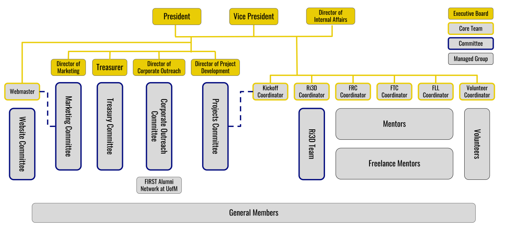

FAMNM Organizational Structure
An outline of FAMNM's organization structure. Blue boxes represent FAMNM Leadership. Orange boxes represent General Body Members. Green boxes are optional positions within each committee. Find out more information below!
FAMNM mentors assist teams both locally and across the state of Michigan. As a FAMNM mentor, you can join any team you'd like, but if you don't have a specific team in mind, we'll find a team whose needs match your skillset! For those who'd like to mentor but have a tight schedule, FAMNM also offers the Freelance Mentor program. FAMNM mentors are eligible for certain travel cost reimbursements!
The Team Coordinators oversee all FAMNM mentors.
Volunteering is an excellent way to stay involved in FIRST® after high school. FAMNM sends volunteers to events all across the state of Michigan and beyond for all FIRST® programs. Whether you want to help out at an event close by or far away, FAMNM will do its best to make sure you can get there. Volunteers serving in key roles are eligible are eligble for travel cost reimbursements!
The Volunteer Coordinator oversees all FAMNM volunteers.
The Treasury Committee is primarily responsible for creating and maintaining a budget, organizing fundraising events and finding sponsorship within the University. The committee is also responsible for organizing donations to FIRST® teams, as well as maintaining the FIRST® Scholarship at U of M.
The VP of Treasury oversees this committee.
The Project Development (PD) Committee is responsible for organizing events on campus for FIRST® teams. This includes our annual FRC and FTC Kickoff events, Robot Quick Build, FAMNM Forums, and more! Additionally, this committee spearheads new programming for FAMNM as a whole.
The VP of Project Development oversees this committee.
The Marketing and Campus Outreach Committee (MACO) is responsible for maintaining and updating social media accounts, recruiting new members, and advertising the organization and its events. The committee is also in charge of planning social events for FAMNM. Finally, MACO maintains the FAMNM website.
The VP of MACO oversees this committee.
The Corporate Outreach Committee organizes events for members to assist with professional development (e.g. resume critiquing, company presentations, and career fair prep), assists in finding corporate sponsorship for FAMNM affiliated teams if necessary, and is responsible for organizing skills workshops for FAMNM members.
The VP of Corporate Outreach oversees this committee.